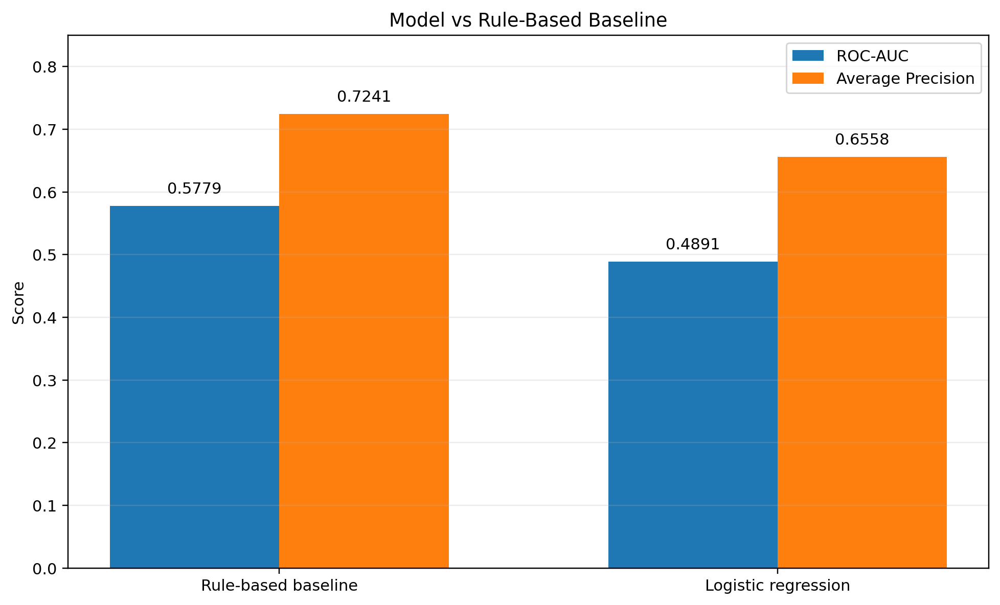
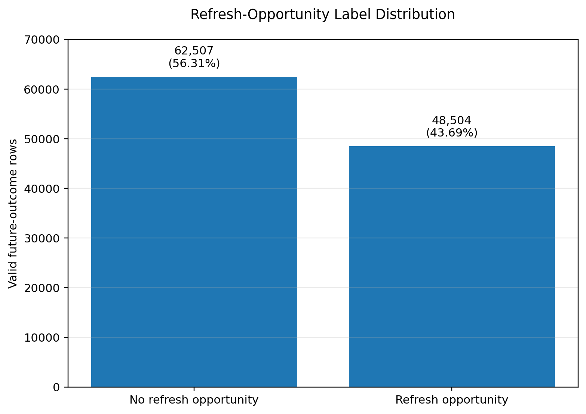
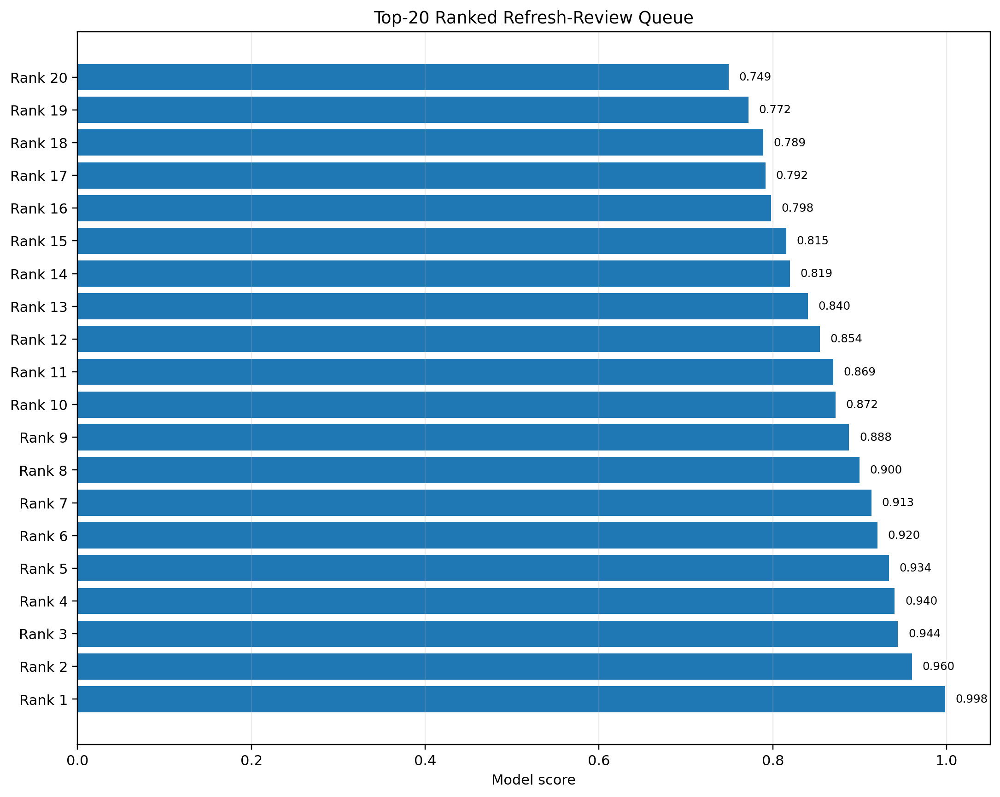

Abstract
This study asks whether a machine-learning model can improve upon a transparent rule-based baseline when ranking content pages for refresh review using only information available at decision time. The analysis uses monthly aggregated content-performance data from the FlyRank ML Internship dataset, with search visibility, clicks, impressions, position, CTR, and recent change signals used as decision-time information. A rule-based baseline was compared with a logistic-regression model using the same evaluation rows and metrics, with a future-month click decline of at least 20% defining the refresh-opportunity label for pages with at least 10 current-month clicks. On the held-out evaluation set, the rule-based baseline achieved ROC-AUC 0.5779 and average precision 0.7241, while logistic regression achieved ROC-AUC 0.4891 and average precision 0.6558. The resulting ranked queue is therefore best treated as decision-support for human refresh review, with the transparent baseline providing the stronger measured ranking signal in this experiment.
The transparent baseline outperformed logistic regression.
Both methods were evaluated on the same held-out observations. The result is a measured comparison, not a claim that machine learning cannot improve refresh prioritization in general.
Problem Framing
The decision supported by this work is which content pages should receive human review for a possible refresh.
The unit of analysis is a content page for a client in a particular month. Each eligible page receives a score and rank, together with a reason code and recommended action.
The human action is not an automatic content rewrite. Instead, an editor can use the ranked queue to decide which pages are worth investigating first.
Cost of a Wrong Call
Missed opportunity
A weak page may be missed and continue to lose search visibility or clicks.
Unnecessary review
A healthy page may receive unnecessary editorial attention, wasting limited review capacity.
A ranking system is useful because the dataset contains many content-page observations, making it difficult to manually inspect every page with equal priority. The goal is therefore to provide a repeatable and transparent way to prioritize review rather than to automate editorial judgment.
Data Safety
The analysis uses the FlyRank ML Internship warehouse release and the daily content-performance data aggregated to a monthly content-page level.
Information Used
- Monthly Google Search clicks
- Monthly Google Search impressions
- Average search position
- CTR
- Google Analytics sessions
- Engaged sessions
- Previous-month clicks
- Previous-month impressions
- Previous-month position
- Recent click-change information
Leakage Controls
Future clicks, future-month information, and future click-change percentage were used only for label construction and evaluation, not as decision-time model features.
Pseudonymous client and content identifiers were retained for grouping and output identification but were not used as predictive model features.
Methodology
Baseline
The first system was a transparent rule-based baseline designed to prioritize pages that showed potentially useful refresh signals.
The baseline combines observable search-performance conditions
into a simple score and assigns reason codes such as
HIGH_SEARCH_VISIBILITY and
WEAK_SEARCH_POSITION.
Machine-Learning Model
The machine-learning model was logistic regression. Logistic regression was selected because the goal was not only to produce a score but also to establish a simple, interpretable machine- learning comparison against the transparent rule.
Target Definition
A page is a refresh opportunity when it has at least 10 current-month clicks and its next month's clicks decline by at least 20%.
The future-month outcome was used only to construct the target. The model did not use future clicks or future-month information as input features.
Evaluation
The evaluation was performed on a held-out test set so that the baseline and machine-learning model could be compared on the same observations.
| Measure | Value |
|---|---|
| Evaluation rows | 19,823 |
| Positive labels | 13,100 |
| Negative labels | 6,723 |
| Positive rate | ≈ 66.1% |
| Majority-class baseline | ≈ 66.1% |
Model vs Baseline
| Method | ROC-AUC | Average Precision |
|---|---|---|
| Rule-based baseline | 0.5779 | 0.7241 |
| Logistic regression | 0.4891 | 0.6558 |
The rule-based baseline therefore performed better than logistic regression on both reported metrics.
This is an important negative result: adding a simple machine- learning model did not automatically improve the ranking system.
The baseline's ROC-AUC above 0.50 indicates some directional discrimination, while the logistic-regression ROC-AUC below 0.50 indicates that its learned ranking was not useful on this held-out evaluation in its current form.
The positive-label rate is relatively high, so average precision should be interpreted alongside the base rate rather than in isolation.
Interpretation
The strongest result from the experiment is that the transparent baseline was more useful than the logistic-regression model for this particular ranking task and feature setup.
The baseline's strongest ranked pages were generally pages with substantial search visibility and measurable search activity. For example, the top-ranked queue included pages with hundreds of clicks and thousands of impressions, allowing the refresh-review process to focus on pages that already have meaningful search exposure.
The reason codes make the output easier to interpret. A page can be prioritized because it has high search visibility or because its observed search position suggests a possible improvement opportunity.
The machine-learning result was a useful negative finding. Logistic regression did not improve upon the hand-designed baseline, suggesting that the current feature representation and linear model were not sufficient to capture a stronger ranking signal.
Ranked Recommendations
Prioritize High-Visibility Pages for Review
Pages with substantial search impressions and clicks can be valuable candidates for human review because improvements may affect content that already receives meaningful search exposure.
Confidence: ModerateReview Pages with Weak Search-Position Signals
Pages showing weaker search positioning can be investigated for content-quality, intent-match, freshness, or SERP-alignment opportunities.
Confidence: DirectionalKeep Reason Codes Visible to Editors
The queue should show the reason behind each recommendation rather than presenting an unexplained score.
Do Not Automatically Refresh Every Ranked Page
The ranked output should be treated as decision-support, not an automatic content-change instruction. Human review remains necessary.
Keep the Transparent Baseline as the Benchmark
Any future model should be required to beat the baseline on the same held-out data and metrics before being considered an improvement.
Research Artifacts
The deployed paper can include the charts generated from the capstone analysis. These visual artifacts should make the comparison and ranked output easier to inspect.



Reproducibility
The analysis was developed in the repository's
work/ notebooks.
The main capstone notebook is:
work/notebooks/capstone.ipynbThe supporting ML notebooks include the weekly signal-audit and baseline-scoring work under:
work/notebooks/Tools and Environment
- Python
- pandas
- DuckDB
- NumPy
- scikit-learn
The warehouse was queried with DuckDB using the Hugging Face dataset release.
The analysis was designed so that monthly aggregation, target construction, baseline scoring, model evaluation, and ranked queue generation can be rerun from the notebooks.
Main Output
The main generated output is the ranked refresh-review queue, containing page-level decision-time features, model/baseline score, rank, reason code, and action.
Acknowledgments & Data Credit
Built on the FlyRank ML Internship dataset.
Data credit: FlyRank